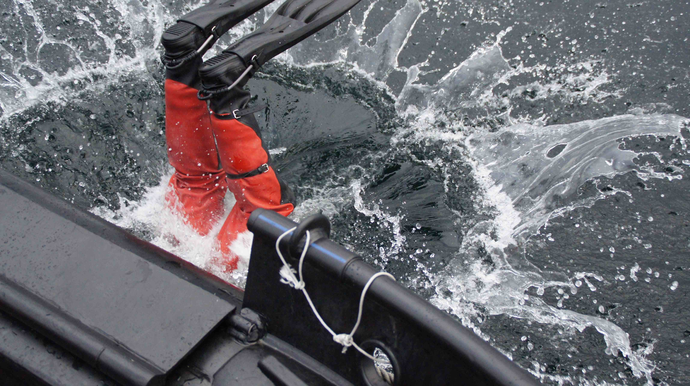

Søndagsdykk
De fleste søndager gjennom semestrene arrangeres søndagsdykk. Arrangement blir i forkant laget på dykkergruppa sin Facebookside slik at både nye og gamle medlemmer kan melde seg på. Vanligvis møtes vi på Idrettsbygget på Gløshaugen klokken 10 hvor utstyr blir pakket og det er mulighet for leie av utstyr og fylling av luft. Deretter drar vi videre til dykkestedet enten i bil eller med Fjøset, dykkebåten vår. Etter dykk er det ofte mulighet til sosialt samvær, som for eksempel grilling om været er fint.
For at søndagsdykk skal arrangeres er vi avhengig av nok påmeldte hver uke. Det er gratis å være, men om vi bruker Fjøset må vi spleise på bensinen vi bruker. Dette er typisk snakk om mellom 30 og 70 kroner pr pers. Bruker vi bil er det også fint å vippse bilføreren noe for bensin, men dette ordner man seg i mellom.
Alle kan arrangere søndagsdykk, og en må ikke nødvendigvis selv være dykkeleder. Se hvordan her. Når du arrangeres er det også viktig at DGs sikkerhetsregler følges. Her er mal på hvordan gjennomføre søndagsdykk.
Bli med for en hyggelig søndag med dykkergruppa!